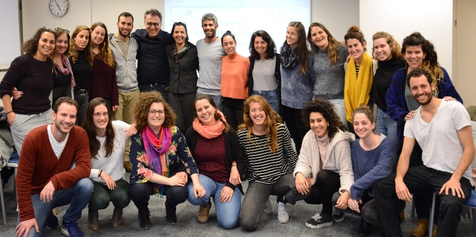

בביקור הציגה יחידת בוגרי מנדל לסטודנטים בתוכנית ה-MBA את עשייתה, וכן דוגמאות נבחרות מעשייתם של הבוגרים. נעמה גולדברג, בוגרת מחזור ט"ו של בית ספר מנדל למנהיגות חינוכית פתחה את המפגש והציגה את "לא עומדות מנגד" – עמותה שהקימה למתן מענה וסיוע רגשי, חומרי ובריאותי לנשים במעגל הזנות, ושהיא מנהלת כיום בהתנדבות. בהרצאה מעוררת השראה הציגה עשייה שמקורה ברצון אנושי וספונטני לסייע, אשר ברבות הזמן הפך לחזון ולשליחות.
אחריה הציג ד"ר איתי אשר, בוגר מחזור כ' של בית ספר מנדל למנהיגות חינוכית והמדען הראשי של משרד החינוך, את תפקידו ואת מחויבותו למחקר מדעי אובייקטיבי ומקצועי בהקשר המערכתי שבו הוא פועל – כחלק ממשרד ממשלתי. מוהנא פארס, בוגר מחזור י' ומנהל אגף תכניות לאומיות מערכתיות במשרד החינוך, הציג את התוכנית הלאומית לקידום המתמטיקה והמקצועות המדעיים שהוא מוביל. הוא דיבר על הובלת תהליכים לשינוי חברתי ברמה הלאומית באמצעות הטמעה של תוכניות חדשות וייחודיות שיוצרות הזדמנות עבור תלמידים מכל המגזרים והחתכים באוכלוסייה ומעודדות אותם להצטיין.
למחרת התארחו הסטודנטים בבית הספר "יד ביד" לחינוך דו-לשוני. אריק ספורטה, בוגר מחזור ב' בתוכנית מנדל לפיתוח מנהיגות חינוכית צעירה בפריפריה ומנהל החטיבה העליונה בבית הספר התיכון, הציג לפניהם את המודל הייחודי של בית הספר, ותיאר את הרקע להקמתו ואת מקומו במערכת החינוך בישראל. ספורטה הדגיש את עשייתם למען הפרכת סטראוטיפים כדי לגשר בין האוכלוסיות ולבנות הבנה טובה יותר.
גילה בן הר, בוגרת מחזור א' של בית ספר מנדל למנהיגות חינוכית, לשעבר מנכ"לית מט"ח (המרכז לטכנולוגיה חינוכית) וכיום יועצת לענייני חדשנות בקרן מנדל-ישראל, שיתפה את הסטודנטים בניסיונה ובחוויותיה המקצועיות משנים של עשייה והובלת תהליכי שינוי בזירות חינוכיות מגוונות. היא סיפרה על האתגרים המרכזיים הניצבים מול מערכת החינוך בישראל, בהם הצורך לפעול לצמצום פערים חינוכיים וחברתיים שעדיין רווחים. בן הר הביעה חשש מכך שמחנכים יאבדו את הקשר האישי עם התלמידים בשל המקום ההולך וגדל שתופסת הטכנולוגיה בתהליך החינוך.
דן פרת, בוגר מחזור י"ד של בית ספר מנדל למנהיגות חינוכית ועד לאחרונה מנכ"ל קרן סטף ורטהיימר לחינוך, הציג את הצורך להתאים את מערכת החינוך לעולם המשתנה ולמהפכה הדיגיטלית. הוא הדגיש את נחיצותן של שיטות למידה חדשניות וסביבת למידה חדשנית וצייר תמונה עתידית של עולם התעסוקה ושל ההתפתחויות הטכנולוגיות שישפיעו עליו, תוך התייחסות לאתגרים הרבים שהוא טומן בחובו, וגם להזדמנויות לצמיחה ולחדשנות.
הסטודנטים קיימו מפגשים אישיים עם ד"ר רותי להבי, בוגרת מחזור א' של בית ספר מנדל למנהיגות חינוכית, וכיום חברת סגל ודיקנית בבית הספר; עם תומר אושרי, בוגר מחזור י"ט ומדריך מחוזי לחינוך-חברתי-ערכי במחוז דרום של משרד החינוך; ועם שרונה בר-נס, בוגרת מחזור ט"ז וחברת צוות בכירה ביחידת בוגרי מנדל. המפגשים האישיים אפשרו לסטודנטים להכיר את הקרן ואת עשייתה באופן בלתי אמצעי, והשיח שהתפתח היווה הזדמנות לשאול שאלות ולהכיר באופן קונקרטי מסלולי התפתחות מקצועי של בוגרים בתוכניות מנדל.
פרופ' פייר קלץ, מייסד ומנהל התכנית,
וד"ר גרניט אלמוג-ברקת, מנהלת יחידת בוגרי מנדל, נעלו את המפגש בשיח ובדיון עם הסטודנטים בנושא "מסלול חיים מקצועי של יזם חברתי".

{kind=link}